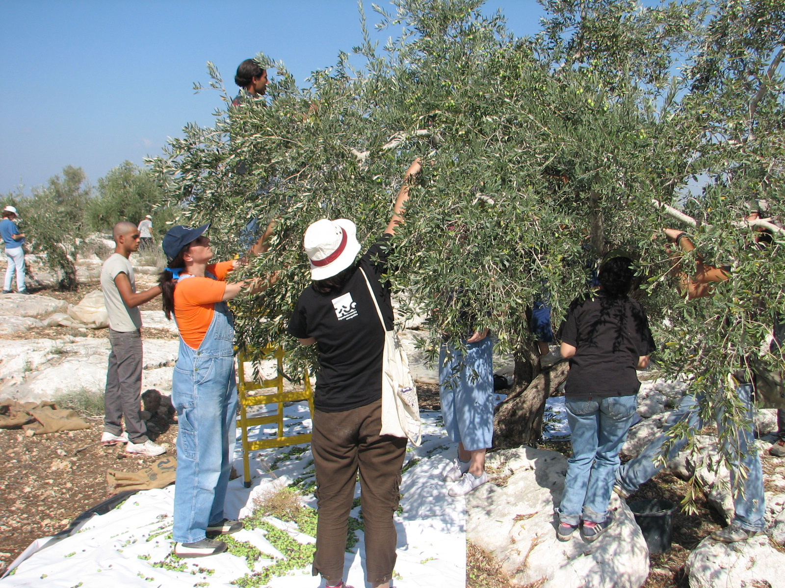

في هذه الأسابيع بالذات، تعبر أسراب اللقلق الأبيض (Ciconia ciconia) والوقّاع سماء البقاع في طريقها جنوباً، بينما يدخل موسم قطاف الزيتون ذروته في الجبل والساحل، من لبنان إلى سوريا والأردن. هذان الحدثان ليسا منفصلين كما قد يبدوان؛ فالتقويم الزراعي الذي يحكم موسم القطاف عندنا يتقاطع زمنياً مع التقويم البيولوجي الذي تسلكه ملايين الطيور المهاجرة عبر الممر الشرقي للبحر المتوسط.
قطاف الزيتون عندنا: ميزة قائمة تستحق الحفاظ عليها

خلافاً لبعض دول جنوب أوروبا التي انتقلت فيها زراعة الزيتون إلى نمط مكثف بآلات شفط واهتزاز ضخمة تعمل ليلاً بأضواء كاشفة — وهي ممارسة وثّقت الجهات الرسمية هناك أنها تقتل ملايين الطيور المهاجرة النائمة داخل الأشجار سنوياً، ما دفع بعض المناطق هناك لحظرها — فإن القطاف في لبنان وسوريا والأردن ما زال إلى حد بعيد يدوياً أو بمشط/هزّاز محمول، ويجري غالباً نهاراً ضمن عمل عائلي أو مجتمعي. هذا في حد ذاته نقطة قوة بيئية حقيقية يستحق المزارع عندنا الإشادة بها، لا فقط التحذير من أخطاء غيره. الحفاظ على هذا النمط — قطاف نهاري، دون اللجوء إلى آلات شفط أو إضاءة قوية ليلية عند التوسع مستقبلاً — كافٍ لتجنيب لبنان المصير الذي واجهته مزارع الزيتون الأوروبية.
مع ذلك، هناك تفصيل عملي بسيط يستحق الانتباه: الشباك التي تُفرش تحت الأشجار لتجميع الحب المتساقط، إن تُركت ممدودة على الأرض طوال الليل دون رفعها أو دون تفقّدها صباحاً، قد تُعيق حركة طيور تتغذى أرضياً قرب جذوع الأشجار أو تستخدم المسطحات العشبية المجاورة للاستراحة. رفع الشباك أو طيّها في نهاية كل يوم عمل، بدل تركها ممدودة بين جلسة قطاف وأخرى، إجراء بسيط لا يكلّف وقتاً إضافياً يُذكر.
حقول الحبوب: محطة تزوّد لا تحتاج تدخلاً معقّداً
بخلاف موسم التكاثر بالربيع، حيث يكون تركيز الطيور على العش والغذاء طويل المدى، فإن حاجتها في الخريف أبسط وأكثر إلحاحاً: طاقة سريعة وماء ومكان آمن للاستراحة قبل متابعة الرحلة. حقول القمح والشعير التي حُصدت في الصيف تقدّم هذه الخدمة مجاناً إن تركها المزارع دون حراثة فورية لبضعة أسابيع، فتستفيد الأسراب من الحبوب المتساقطة كوقود لعبور نقاط الاختناق الجبلية. بركة مياه صغيرة منخفضة الحواف في زاوية الأرض تكفي أيضاً لجذب أعداد ملحوظة من الطيور المنهكة من الرحلة.
توقيت المبيدات القوارضية في البساتين
في بساتين الزيتون والفاكهة، يلجأ بعض المزارعين لمبيدات قوارض حول جذوع الأشجار أو مستودعات التخزين. المشكلة أن جوارح مثل العوسق (Falco tinnunculus) والبوم، التي تتغذى تحديداً على هذه القوارض وتشكّل خط دفاع طبيعياً ومجانياً ضدها، تتعرض للتسمم الثانوي حين تأكل قارضاً مسموماً. الأفضل تجنّب هذه المبيدات أو تقليصها خلال ذروة موسم العبور تحديداً، والاعتماد على الجوارح المقيمة والعابرة نفسها كأداة مكافحة بديلة.
السياج النباتي: ملجأ لا يكلّف شيئاً
الشجيرات المحلية على أطراف الحقول، بدل الأسلاك أو الأسيجة المعدنية، تمنح الأسراب العابرة نقاط استراحة آمنة من الرياح ومن الحيوانات المفترسة، إضافة إلى ثمار برية تشكّل مصدر طاقة إضافياً في هذا التوقيت بالذات من السنة.
الخطر الأكبر يبقى السلاح لا المحراث
مهما بلغت دقة الممارسات الزراعية، يبقى الخطر الأول على هذه الأسراب هو ما لا علاقة له بالزراعة إطلاقاً: إطلاق النار العشوائي من أفراد عديمي المسؤولية على أسراب كاملة أثناء عبورها، وهي ممارسة توثّقها المنظمات المتخصصة سنوياً وتتحول أحياناً إلى مجازر جماعية تطال أنواعاً محمية بالكامل، بمعزل عن أي طريدة مسموح صيدها. وهذا تحديداً محور الحملة الخريفية الحالية التي تنفذها وحدة APU التابعة لـMECSHAP بالتعاون مع CABS، والتي أعلنّاها مؤخراً على «صيد» لحماية ممرات الهجرة هذا الموسم.
وإلى جانب هذا الخطر المباشر، هناك ضرر بيئي من نوع مختلف تماماً: العمليات العسكرية التي شهدها جنوب لبنان خلال السنوات الأخيرة خلّفت دماراً واسعاً في الغابات والأراضي الزراعية — تتحدث تقديرات رسمية لبنانية عن نحو 16 ألف هكتار محروقة، بينها آلاف الدونمات من أشجار الزيتون المعمّرة، وما يتجاوز خمس مساحة الأراضي الزراعية والحرجية في الجنوب — وهذا الجنوب تحديداً يقع على أحد أهم ممرات الهجرة التي تعبرها ملايين الطيور بين أوروبا وأفريقيا مرتين كل عام. فقدان الغطاء النباتي ونقاط الاستراحة الطبيعية في هذه المنطقة يضاعف من هشاشة رحلة أسراب أنهكها أصلاً آلاف الكيلومترات من الطيران.
مسؤولية مشتركة بين حقل المزارع وبندقية الصياد المستدام
المزارع الذي يترك بضعة أسابيع قبل الحراثة، والصياد المستدام الذي يميّز بين طريدته المشروعة وسرب عابر محمي، يخدمان الهدف نفسه من موقعين مختلفين: بيئة حية قادرة على تجديد نفسها موسماً بعد موسم. لا حاجة لتضحية أحدهما بمصلحته لصالح الآخر — فقط بعض الوعي بتوقيت العمل الزراعي وتفاصيله الصغيرة، لنحوّل موسم الخريف من موسم خطر على الطيور إلى موسم عبور آمن يليق بتاريخ لبنان والمشرق كممر طبيعي عريق لهجرتها.